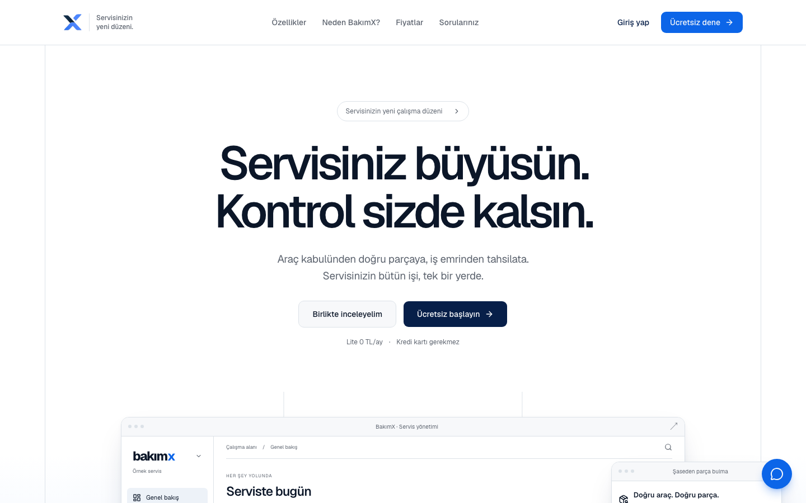
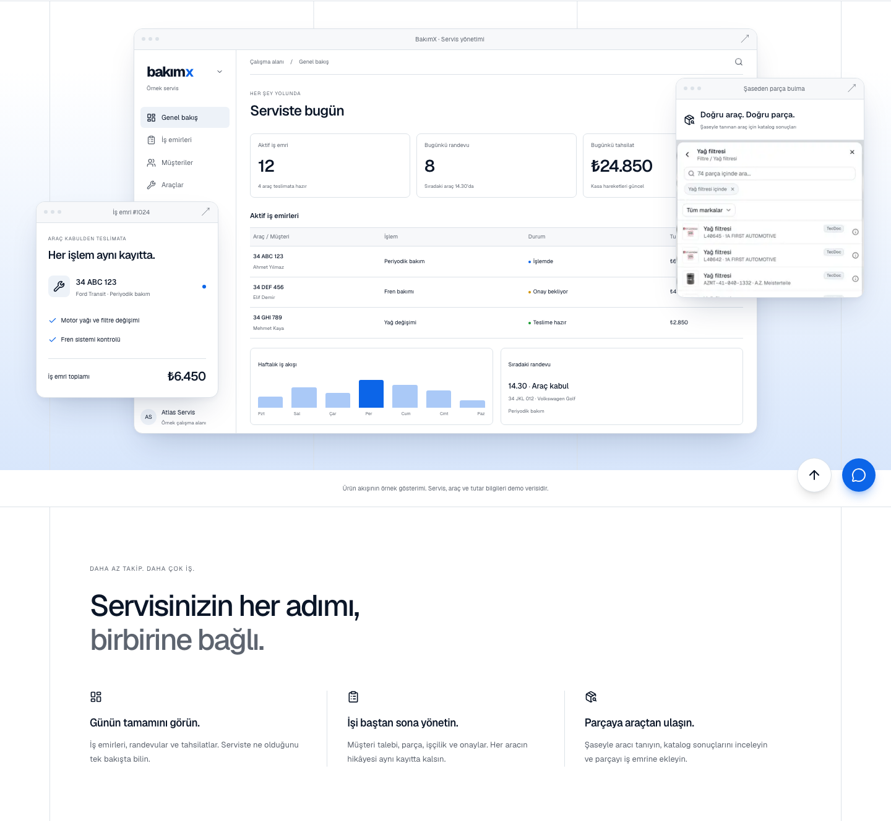
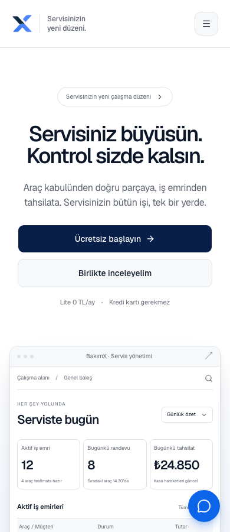
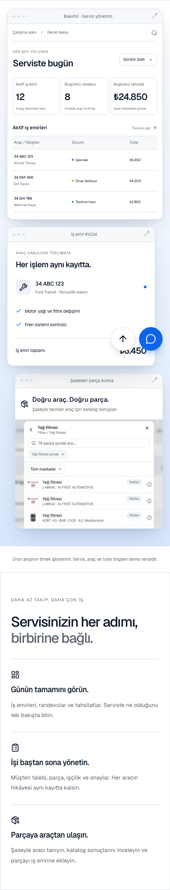

Servisiniz büyüsün. Kontrol sizde kalsın.
Attio referanslı ikinci deneme · Çalışan önizleme · Tasarım rehberi · İlk deneme
Masaüstü — ana mesaj

Katmanlı ürün alanı

Mobil


Tam sayfa masaüstü · Tam sayfa mobil